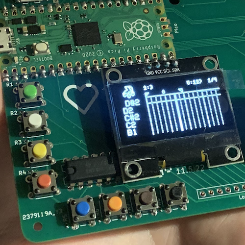
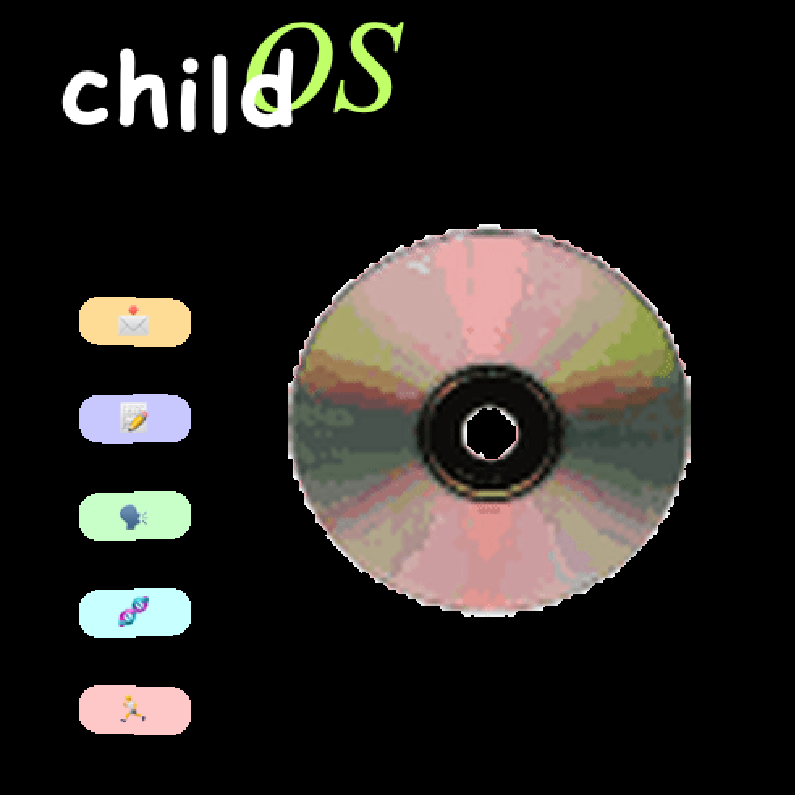
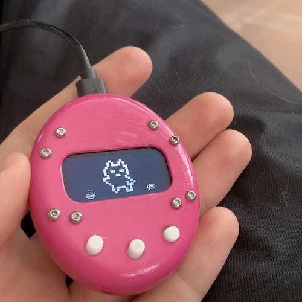
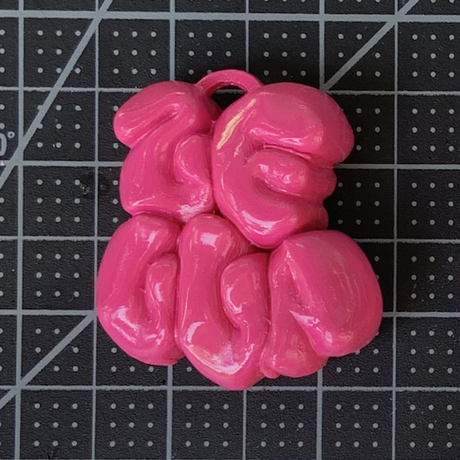
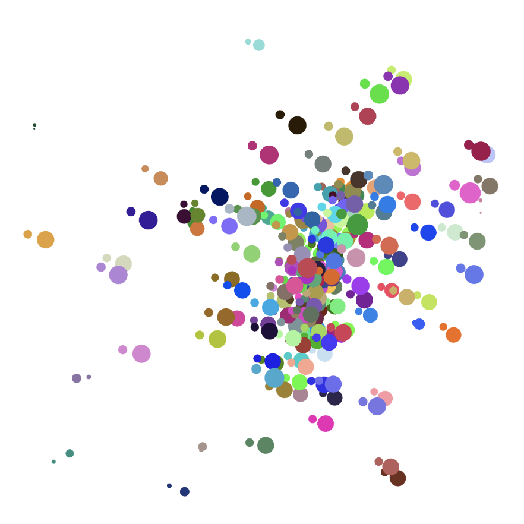
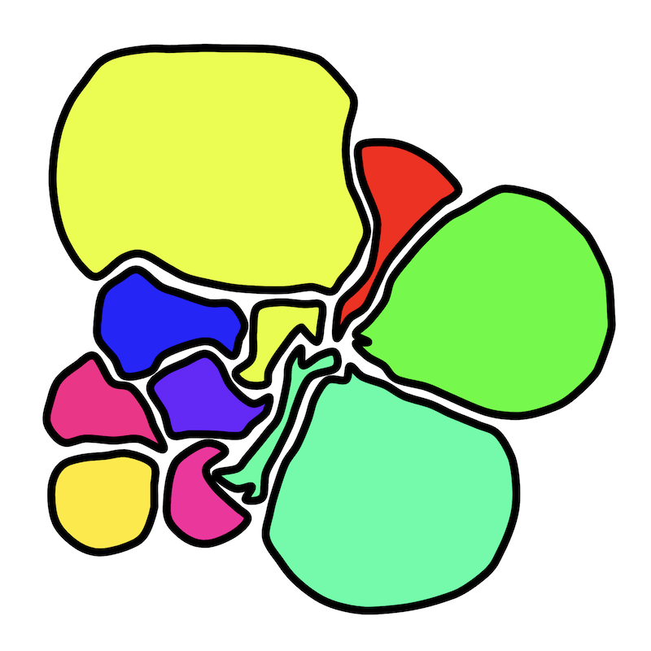
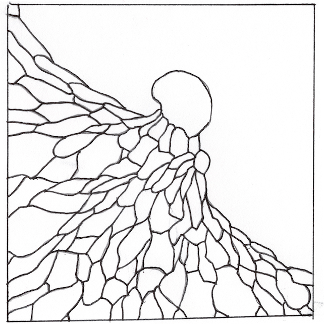
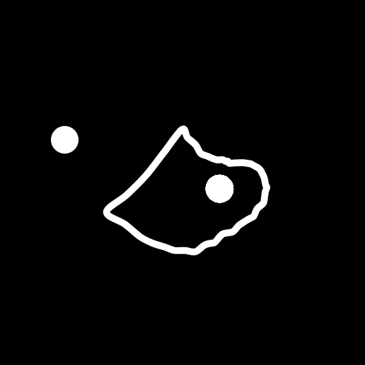
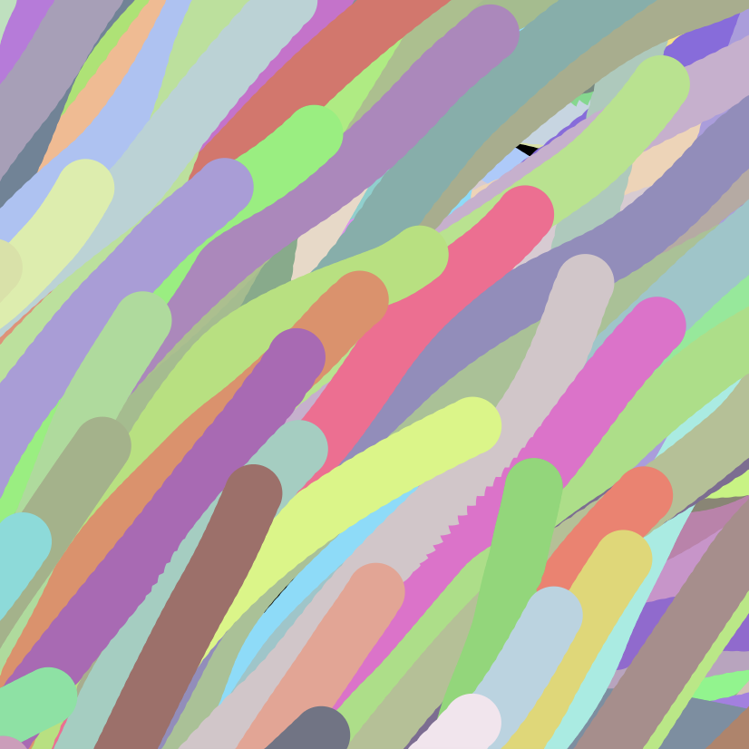
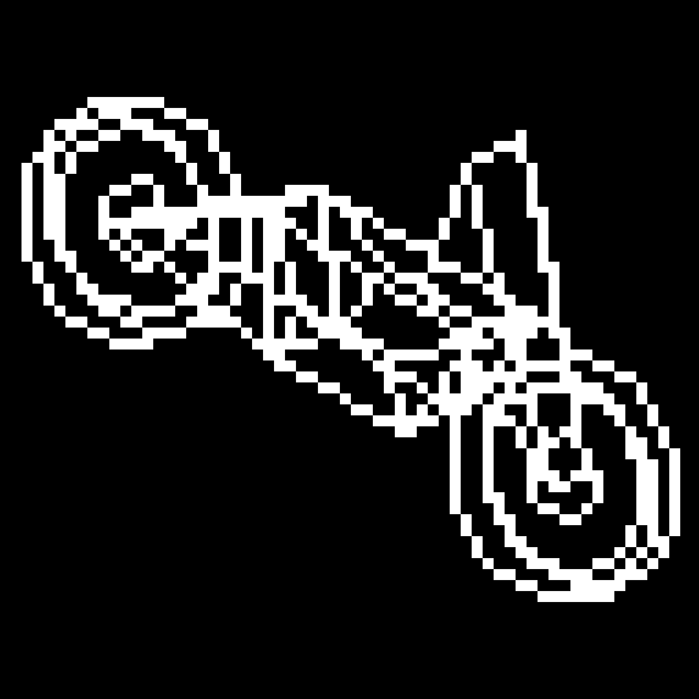

<!DOCTYPE html>
<html>
<head>
<meta charset="utf-8">
<title>Alex LaFetra</title>
<link href="project_gallery.css" rel="stylesheet">
<script>
    const stepchild = {
        icon:"stepchild_2.png",
        date:"5.27.22 (ongoing)",
        title:"step/child",
        subtitle:"A handheld midi sequencer, with a graphical OS",
        link_target:"_top",
        href:"../blogs/stepchild.html"
    }
    const childOSInterface = {
        icon:"childOSinterface.png",
        date:"10.10.23",
        title:"childOS Interface",
        subtitle:"A java application for interfacing between the step/child and a PC. This application uses Processing's java libraries to create a graphical interface (emoji icons included, ofc), Serial and MIDI libraries to link and send/receive MIDI files to and from the step/child over USB, and custom scripts for converting .stpchld files to MIDI files for use in a DAW. Also supports flashing firmware updates and custom firmware to the step/child via USB.",
        link_target:"_top",
        href:"childOS/childOSInterface.html"
    }

    const tamo = {
        icon:"tamo.png",
        date:"",
        title:"Tamo",
        subtitle:"Designing and building a tamagotchi using onShape, a 3D printer, and a pi pico. Tamo led to experimenting with my own sprite and animation classes, but had some serious problems with power consumption and buildability.",
        link_target:"",
        href: "tamo/tamo.html"
    }

    const bubbleLetters = {
        icon:"3d_print.png",
        date:"",
        title:"Bubble Letters",
        subtitle:"Experimenting with Blender and a 3D printer",
        link_target:"_top",
        href: "tamo/tamo.html"
    }

    const murmur = {
        icon:"murmur.png",
        date:"2.11.23 - 7.2.23",
        title:"Murmur",
        subtitle:"Murmur is an application that simulates a flock of birds and gathers statistical data about the flock to alter sample playback of an audio file accordingly. Murmur is inspired by the emergent behavior of Craig Reynold's 'boids' algorithm and granular synthesis techniques and uses Processing and the Beads library for graphics and audio.",
        link_target:"_top",
        href: "murmur/murmur.html"
    }

    const web_murmur = {
        icon:"web_murmur.png",
        date:"6.30.23 (ongoing)",
        title:"Web Murmur",
        subtitle:"Porting murmur to the web with p5.js. It's a mess.",
        link_target:"_top",
        href: "murmur/murmur.html"
    }

    const ink = {
        icon:"ink.png",
        date:"3.9.23",
        title:"Ink Sim",
        subtitle:"Messing around",
        link_target:"",
        href: "ink/ink.html"
    }

    const cellSim = {
        icon:"cells.png",
        date:"3.10.23",
        title:"Cell Sim",
        subtitle:"Messing around",
        link_target:"",
        href: "cells/cells.html"
    }

    const tissueAnim = {
        icon:"tissueMigration.png",
        date:"",
        title:"Tissue Migration",
        subtitle:"Hand-animation and musical score depicting epithelial tissue migration",
        link_target:"",
        href: "tissuemigrationanimation/tissueMigration.html"
    }

    const cellMigration = {
        icon:"cellMigration.png",
        date:"",
        title:"Modelling Cell Migration",
        subtitle:"Simple exploration of cell migration models",
        link_target:"_top",
        href: "../digital_work/cell_migration.html"
    }

    const boids = {
        icon:"boids.png",
        date:"",
        title:"Boids",
        subtitle:"",
        link_target:"",
        href: "boids/boids.html"
    }

    const motorcycle = {
        icon:"motorcycle.png",
        date:"ongoing",
        title:"Electric Motorcycle Display",
        subtitle:"",
        link_target:"",
        href: "boids/boids.html"
    }

    const projectList = [stepchild,childOSInterface,tamo,bubbleLetters,murmur,web_murmur,ink,cellSim, tissueAnim,cellMigration,boids,motorcycle];

    function clearAllProjects(){
        document.getElementById("container").innerHTML = "";
    }
    function addProject(proj){
        let date = document.createElement('p');
        date.className = "date";
        date.innerHTML = proj.date;

        let title = document.createElement('p');
        title.className = "title";
        title.innerHTML = proj.title;

        let subtitle = document.createElement('p');
        subtitle.className = "subtitle";
        subtitle.innerHTML = proj.subtitle;

        // appending to description div
        let desc = document.createElement('div');
        desc.className = "description";
        desc.appendChild(date);
        desc.appendChild(title);
        desc.appendChild(subtitle);

        // appending desc+image to icon div
        let img = document.createElement('img');
        img.src = "thumbnails/"+proj.icon;
        let div = document.createElement('div');
        div.className = "icon";
        div.appendChild(img);
        div.appendChild(desc);
        
        // appending everything to <a> tag
        let link = document.createElement('a');
        link.target = proj.link_target;
        link.href = proj.href;
        link.appendChild(div);

        //appending everything to "container" div
        document.getElementById("container").appendChild(link);
    }
    function buildProjects(projList){
        for(proj of projList){
            addProject(proj);
        }
    }
</script>
</head>
<body>
    <div id = "container">
        <!-- stepchild -->
        <!-- <a href = "../blogs/stepchild.html" target = "_top">
            <div class = "icon">
                              
                <div class = "description">
                    <p class = "date">5.27.22 - ongoing</p>
                    <p class = "title">step/child</p>
                    <p class = "subtitle">A handheld midi sequencer, with a graphical OS</p>
                </div>
            </div>
        </a> -->
        <!-- childOSInterface -->
        <!-- <a href = "childOS/childOSInterface.html" target = "_top">
        <div class = "icon">
            
            <div class = "description">
                <p class = "title">childOS Interface</p>
                <p class = "subtitle">A java application for interfacing between the step/child and a PC.
                     This application uses Processing's java libraries to create a graphical interface (emoji icons included, ofc), 
                     Serial and MIDI libraries to link and send/receive MIDI files to and from the step/child over USB, and custom scripts for converting
                     .stpchld files to MIDI files for use in a DAW. Also supports flashing firmware updates and custom firmware to the step/child via USB.
                </p>
            </div>
        </div>
        </a> -->
        <!-- tamo -->
        <!-- <a href = "tamo/tamo.html">
            <div class = "icon">
                
                <div class = "description">
                    <p class = "title">Tamo</p>
                    <p class = "subtitle">Handmaking a tamagotchi</p>
                </div>
            </div>
        </a> -->
        <!-- 3d printer -->
        <!-- <a href = "../digital_work/ink/ink_people.html" target = "_top">
        <div class = "icon">
            
            <div class = "description">
                <p class = "title">Bubble Letters</p>
                <p class = "subtitle">Making something with blender and a 3D printer</p>
            </div>
        </div>
        </a> -->
        <!-- murmur -->
        <!-- <a href = "murmur/murmur.html" target = "_top">
        <div class = "icon">
            
            <div class = "description">
                <p class = "title">Murmur</p>
                <p class = "subtitle">A granular sampler instrument (?) inspired by flocking behavior</p>
            </div>
        </div>
        </a> -->
        <!-- murmur -->
        <!-- <a href = "murmur/murmur.html" target = "_top">
            <div class = "icon">
                
                <div class = "description">
                    <p class = "title">Web Murmur</p>
                    <p class = "subtitle">Porting murmur to the web with p5.js</p>
                </div>
            </div>
        </a> -->
        <!-- ink -->
        <!-- <a href = "ink/ink.html">
        <div class = "icon">
                
            <div class = "description">
                <p class = "title">Ink simulation</p>
                <p class = "subtitle">Messing around with blend colormodes and surface tension</p>
            </div>
        </div>
        </a> -->
        <!-- cell sim -->
        <!-- <a href = "cells/cells.html">
        <div class = "icon">
            
            <div class = "description">
                <p class = "title">Cell sim</p>
                <p class = "subtitle">Playing around with cell membrane simulations</p>
            </div>
        </div>
        </a> -->
        <!-- tissue animation -->
        <!-- <a href = "tissuemigrationanimation/tissueMigration.html">
        <div class = "icon">
            
            <div class = "description">
                <p class = "title">Tissue Migration</p>
                <p class = "subtitle">A hand-animation of epithelial cells undergoing migration</p>
            </div>
        </div>
        </a> -->
        <!-- cell migration sim -->
        <!-- <a href = "../digital_work/cell_migration.html" target = "_top">
        <div class = "icon">
            
            <div class = "description">
                <p class = "title">Cell Migration Models</p>
                <p class = "subtitle">Low-res explorations of simple cell migration</p>
            </div>
        </div>
        </a> -->
        <!-- boids  -->
        <!-- <a href = "boids/boids.html">
        <div class = "icon">
            
            <div class = "description">
                <p class = "title">Boids</p>
                <p class = "subtitle">Experiments with flocking behavior</p>
            </div>
        </div>
        </a> -->
                <!-- motorcycle -->
        <!-- <a href = "../digital_work/ink/ink_people.html" target = "_top">
        <div class = "icon">
            
            <div class = "description">
                <p class = "title">Motorcycle HUD</p>
                <p class = "subtitle"></p>
            </div>
        </div>
        </a> -->
    </div>
</body>
<script>
    // clearAllProjects();
    buildProjects(projectList);
</script>
</html>
